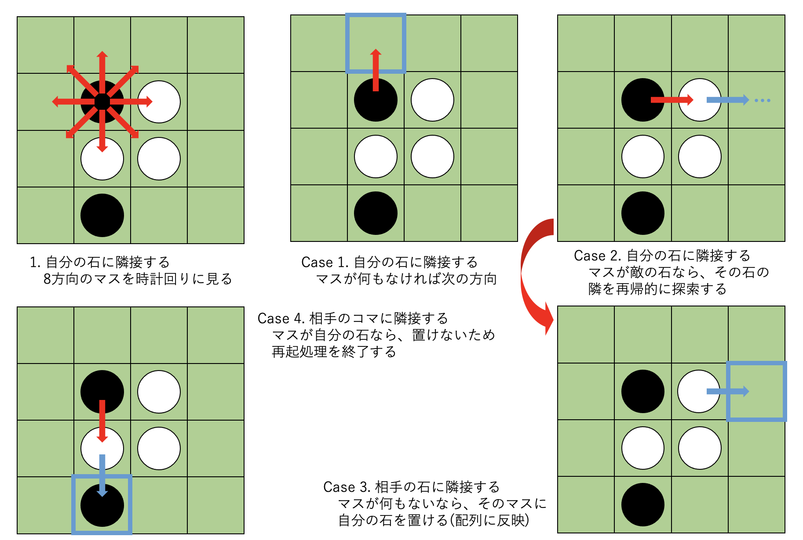
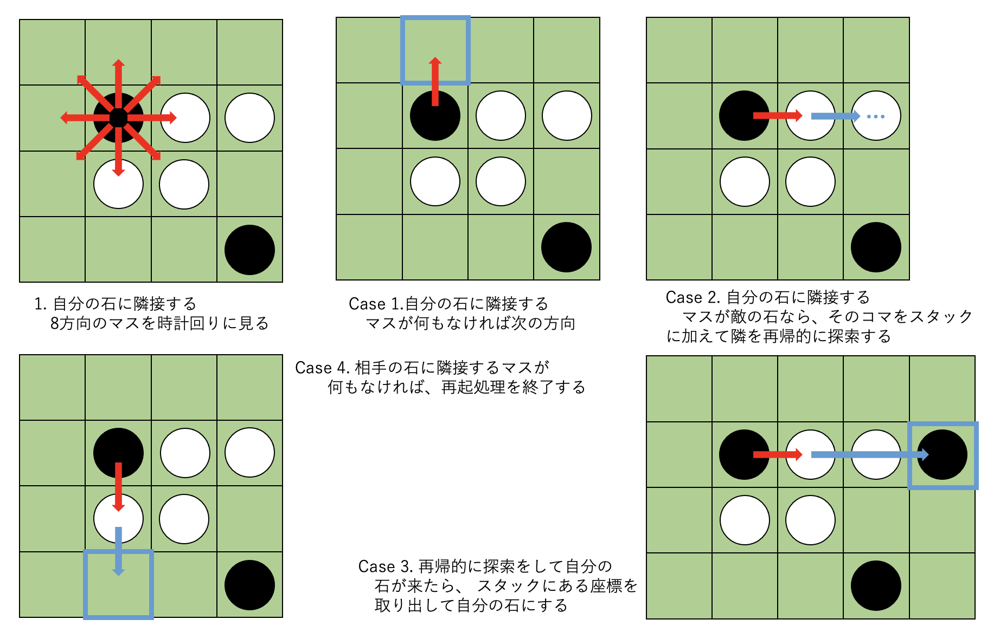
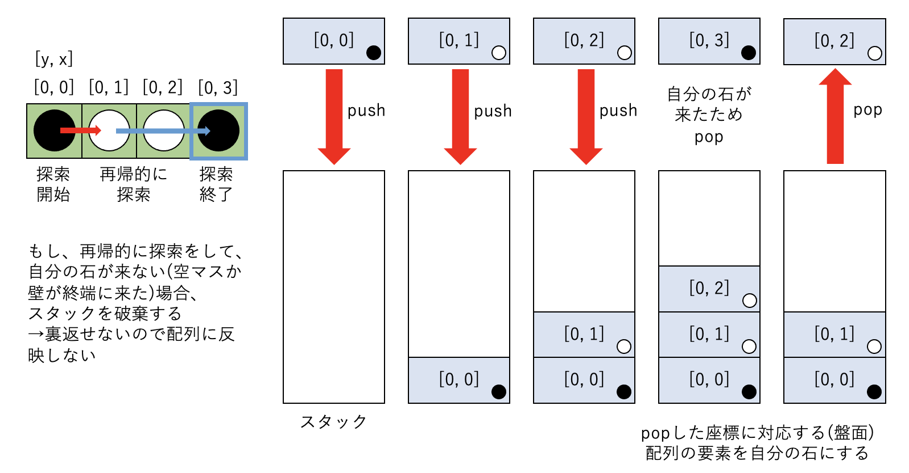

想定プレイ人数: 2人
アプレットが起動したら、石を置きたい場所にカーソルを持っていき、マウスを左クリックしてください。
先手(黒)、後手(白)の順番にマウスを交換して遊んでください。
今回の自由課題制作にあたって、複合融合演習の「ネットワークとセキュリティ」のテーマでサーバー周りの知識が増えたことや、情報工学実験1でもWebSocketについて触れられていたことから、Javaでもサーバーを用いた通信対戦が可能なゲームを作りたいと思い、実装が比較的容易な「リバーシ」を制作することを決めました。
しかし、最後の最後でJava側のセキュリティの仕様に弾かれたためアプレットからサーバーに接続できず、管理者権限のある環境下でなけれなどうにもならないことから、最終的にはソロプレイのみを実装して通信対戦は断念するという形になりました。
4. ソケット通信についてでは、(本来使用するはずだった)通信対戦のベースとなるチャットサーバー(CUI版)をServerSocketとThreadを用いて作成したので、この記事を見て通信対戦の意志を継いでくれるかもしれない"後輩"のために記録を残しておきます。
なお、後程にも記述しますが、今回作成したソースコードは、https://github.com/Tomopu/reversiに公開していますので、今後何か作品を作る際に役立てていただければ幸いです。
今回、リバーシを作成するにあったって苦労したことは、石を置けるかを判断する処理と、石をひっくり返す処理です。
まず、石を置けるかを判断する処理に関しては、盤面に置かれている石のうち、自分の色の石を見つけた場合には以下のような手順で処理します。
なお、リバーシの盤面が8x8マスなので、盤面を表す配列については外周に壁を設置するように10x10の二次元配列にします。(空白0, 黒1, 白2, 候補3, 壁4)
ゲーム開始時の(盤面)配列の各値
| 4 | 4 | 4 | 4 | 4 | 4 | 4 | 4 | 4 | 4 |
|---|---|---|---|---|---|---|---|---|---|
| 4 | 0 | 0 | 0 | 0 | 0 | 0 | 0 | 0 | 4 |
| 4 | 0 | 0 | 0 | 0 | 0 | 0 | 0 | 0 | 4 |
| 4 | 0 | 0 | 0 | 0 | 0 | 0 | 0 | 0 | 4 |
| 4 | 0 | 0 | 0 | 2 | 1 | 0 | 0 | 0 | 4 |
| 4 | 0 | 0 | 0 | 1 | 2 | 0 | 0 | 0 | 4 |
| 4 | 0 | 0 | 0 | 0 | 0 | 0 | 0 | 0 | 4 |
| 4 | 0 | 0 | 0 | 0 | 0 | 0 | 0 | 0 | 4 |
| 4 | 0 | 0 | 0 | 0 | 0 | 0 | 0 | 0 | 4 |
| 4 | 4 | 4 | 4 | 4 | 4 | 4 | 4 | 4 | 4 |
また、石をひっくり返す処理に関しては、以下のような手順で処理します。ただし、石を置ける場所は上記の処理で限定されているので、必ず一列はひっくり返せることが保証されています。
また、上記に書かれているスタックとは、以下のようなものを指しています。
JavaにはStackやPointなどといったクラスが標準で実装されていますが、今回はあえてMyStackやMyPointを一から実装しました。
1. はじめにでも書いた通り、当初の予定では、ソケット通信を用いた通信対戦型のリバーシを作成する予定でしたが、実際にサーバーを作成してアプレットから接続しようとすると
("java.net.SocketPermission" "192.168.X.X:10000" "connect,resolve")
java.security.AccessControlException: access denied ("java.net.SocketPermission" "192.168.X.X:10000" "connect,resolve")
のようなエラーが発生しました。参考1によると、Java7u51においてDefault Socket Permissionsが変更されたため、アプレットからサーバーに接続する際にセキュリティーの権限周りで弾かれるようです。
解決方法としては、参考2などにもあるように、(MacOSの場合は)/Library/Internet Plug-Ins/JavaAppletPlugin.plugin/Contents/Home/lib/security/java.policyの一部を変更すると良いそうですが、java.policyは管理者以外だとread onlyなので、学校の実験室環境でこの変更をすることが不可能なことに加え、このようなアプレットの仕様に気が付くのが遅すぎたこともあり、今回は通信対戦を断念する形となってしましました。
また、PermissionクラスやSocketPermissionクラスなどもJavaにはあるそうですが、こちらに関しては私の知識不足もあり、深いところまで理解するこができませんでした。(授業以外の範囲でもJavaの奥深さを思い知らされました...。)
もしかしたら、java.policyを変更する以外にもアプレットからサーバーに接続できるようにする方法があるかもしれません。(ただし、セキュリティーレベルが下がってしまうのでその点は注意してください。)
参考1: Java7u51でJavaDB(1527port)が起動しなくなったときの対処
https://qiita.com/peko_kun/items/7307fd8c138fe3d2ceb4参考2: OS X(Mac)でJavaをアップデートするとアプレットでSocketPermissionエラーが出る時の対処
https://qiita.com/takaakikasai/items/404187233654c5525f04参考3: Java Development Kit (JDK)でのアクセス権
https://docs.oracle.com/javase/jp/8/docs/technotes/guides/security/permissions.html参考4: java.security.AccessControlException: アクセス拒否エラー
https://docs.oracle.com/cd/E19528-01/820-1614/6nd995fva/index.html参考5: Permission (Java Platform SE 8 )
https://docs.oracle.com/javase/jp/8/docs/api/java/security/Permissions.html参考6: SocketPermission (Java Platform SE 8 )
https://docs.oracle.com/javase/jp/8/docs/api/java/net/SocketPermission.htmlこの章では、1. はじめにでも書いた「通信対戦のベースとなるチャットサーバー(CUI版)」について説明をします。
ソースはhttps://github.com/Tomopu/ChatServerからダウンロードできますので、何かの参考になれば幸いです。
1. Server.java, ServerThread.java, Client.java, ClientThread.java をコンパイルする
2. Server.classを実行
3. 別ウィンドウで Client.classを実行
4. クライアントの数に応じて別ウィンドウで Client.classを実行
(デフォルトでは、クライアントの最大接続数が2人になっています。変更したい場合は、Server.java内の ACCEPTMAXを任意の値にしてください。)
参考1: CよりJavaが好き: ネットワーク対戦型ゲームその2
http://fanblogs.jp/sert/archive/3/0参考2: 5. IPマルチキャスト (2) | TECHSCORE(テックスコア)
https://www.techscore.com/tech/Java/JavaSE/Network/5-2/参考3: ネットワーク(4)
http://www.rsch.tuis.ac.jp/~ohmi/software-basic/network4.html参考4: Thread (Java Platform SE 8 )
https://docs.oracle.com/javase/jp/8/docs/api/java/lang/Thread.html参考5: Javaのスレッド(Thread)を使いこなすコツを、基礎から ...
https://www.bold.ne.jp/engineer-club/java-thread今回の自由課題の制作をと通して、AppletやJavaそのものに対しての理解を深めることができました。
当初予定していた通信対戦の機能は実装できなかったものの、実際にサーバーやスレッドなどに触れてみて、並列処理の面白さやセキュリティの重要性、さらにはJavaの奥深さを知ることができたので、少し背伸びをして挑戦してみて良かったなと思います。
また、ガベージコレクションやIndexOutOfBoundsExceptionなど、C言語で問題となるメモリ周りのセキュリティに対してもJavaでは対策がされており、世界的にJavaが広くシェアされている理由が分かった気がします。
今回学んだオブジェクト指向という考え方は、JavaScriptやPythonなど、他のプログラミング言語にも通ずるものなので、今後学習していく際にはJavaを思い出しながら勉強していきたいと思います。